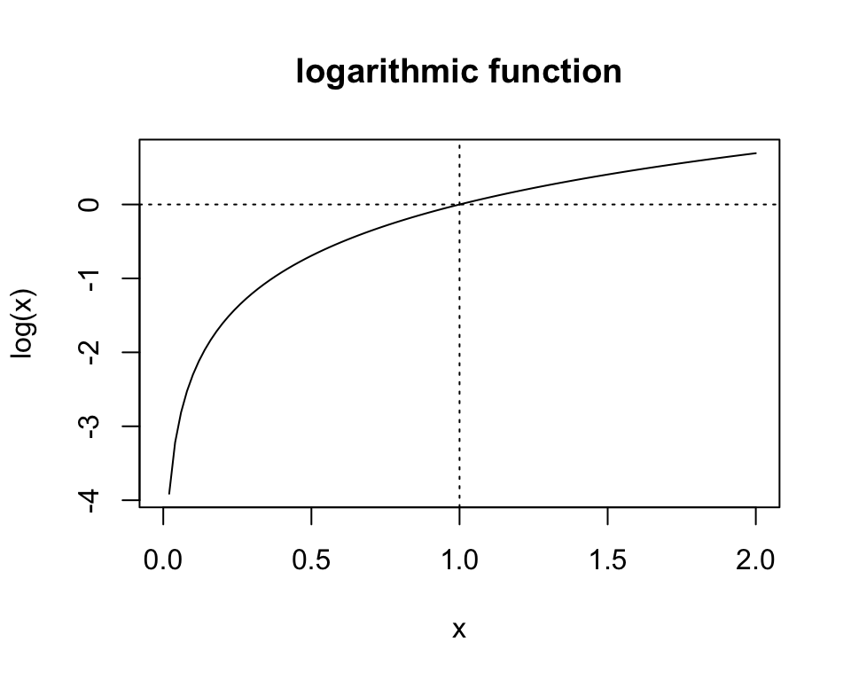
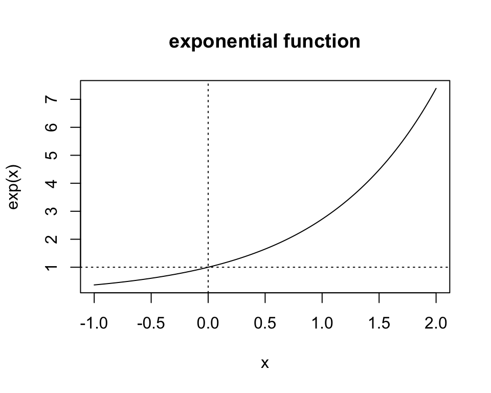
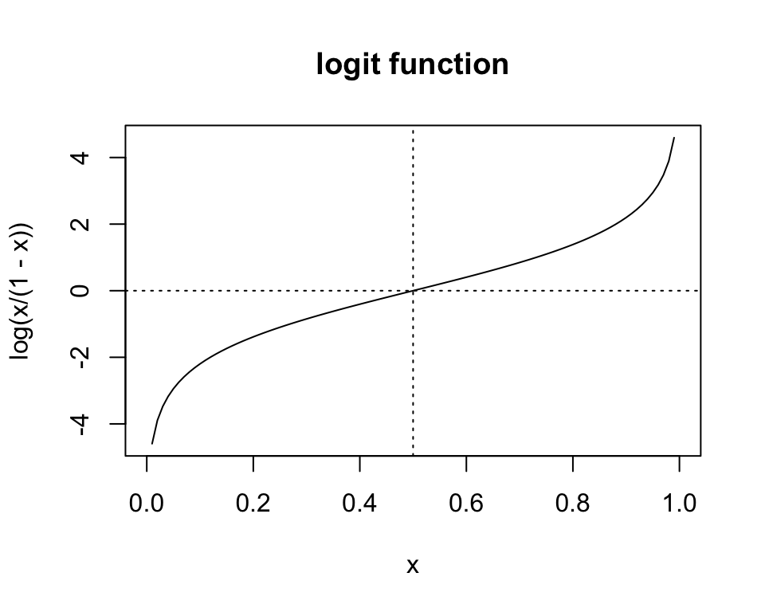
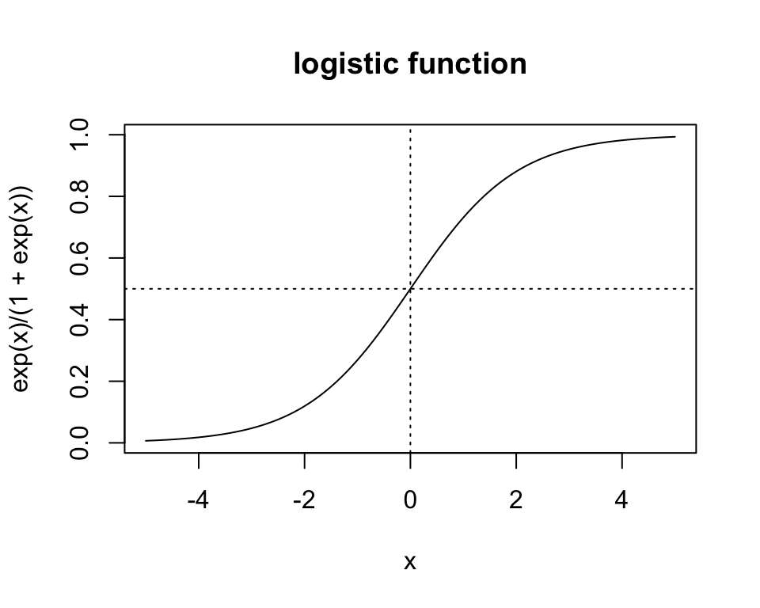
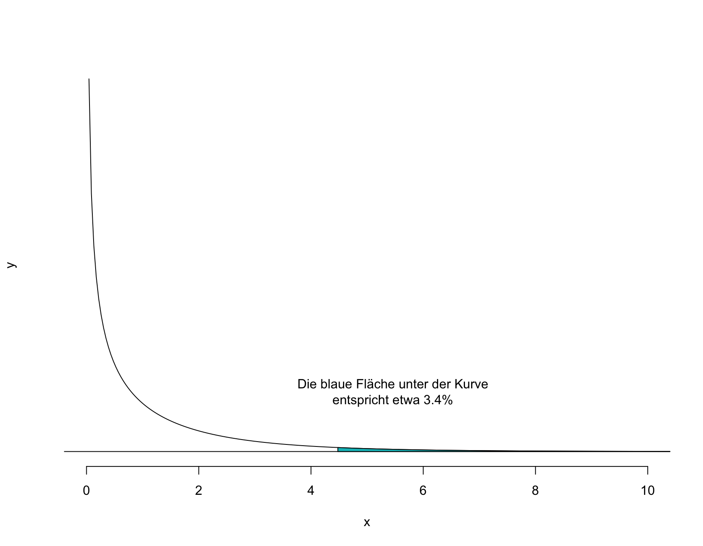
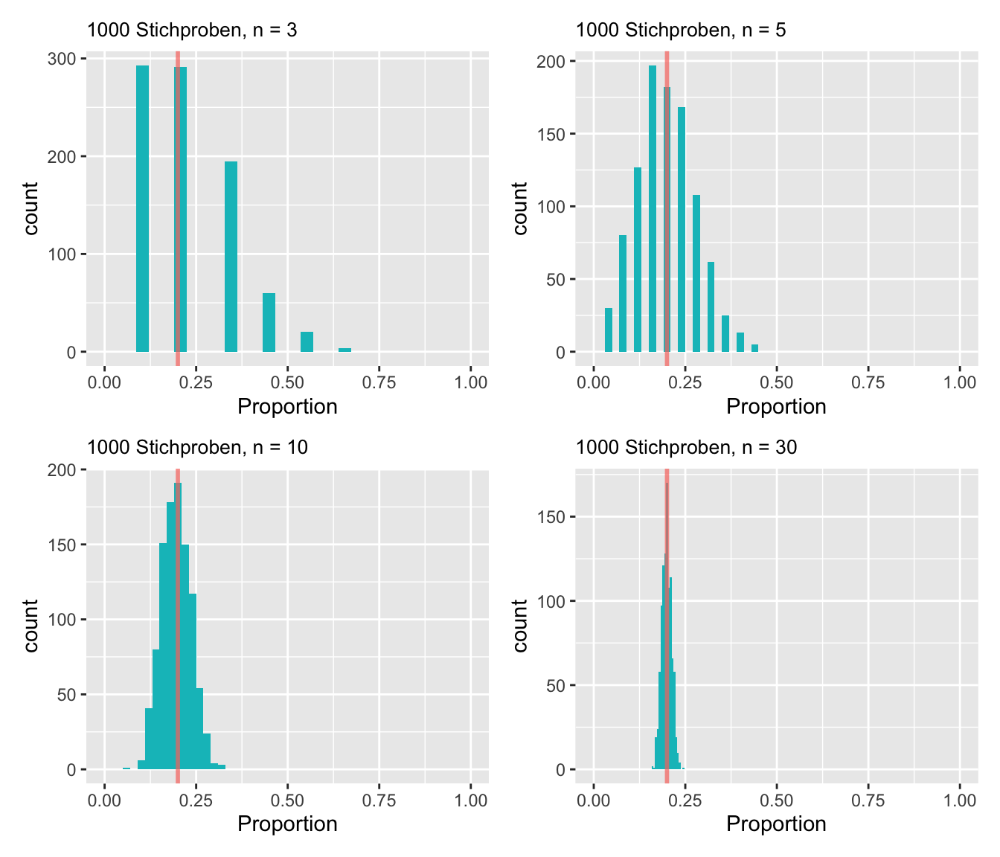
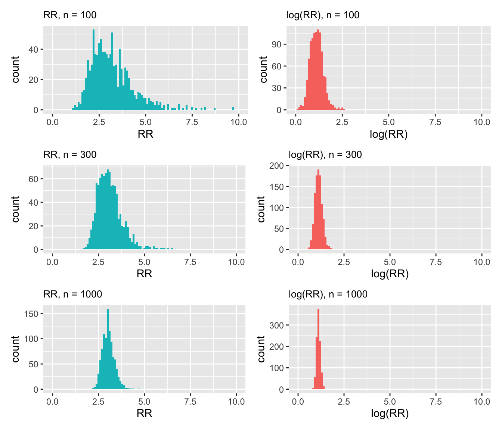
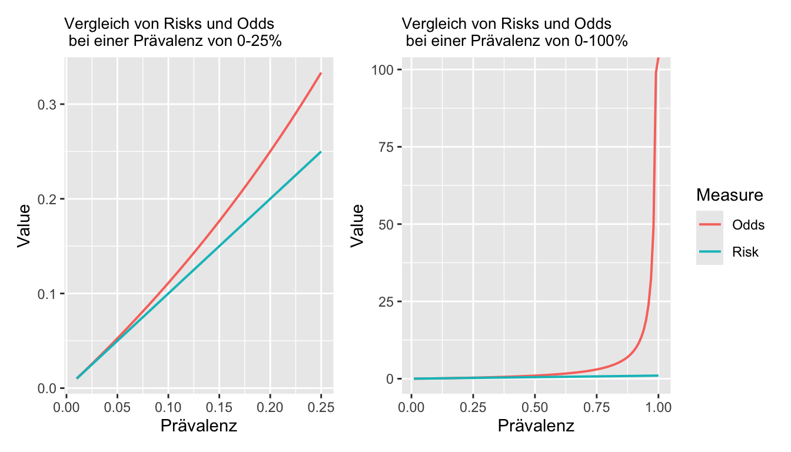
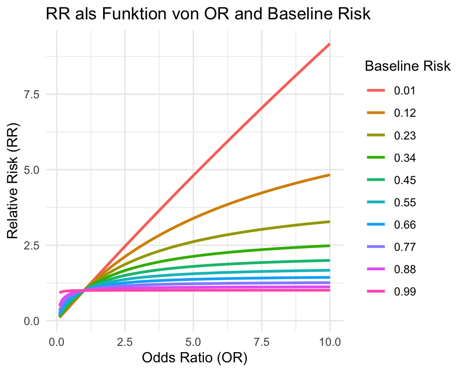

In diesem Kapitel lernen wir, wie Häufigkeiten von qualitativ-nominalen Variablen statistisch verglichen werden. Für die Analyse qualitativer Daten existieren zahlreiche statistische Werkzeuge, von denen hier nur eine Auswahl behandelt wird.
Verwende einen \(\chi^2\)-Test, wenn die Unabhängigkeit von zwei nominalen Variablen geprüft werden soll.
Führe einen \(\chi^2\)-Test in R durch und interpretiere alle Zeilen des Output.
Berechne Proportionen bzw. Risiken, Odds, Risk Ratios und Odds Ratios auf Basis von Vierfeldertabellen von Hand und mit Hilfe von R.
Rechne Odds in Wahrscheinlichkeiten/Proportionen um und umgekehrt:
\[ P = \frac{Odds}{1+Odds} \]
und
\[ Odds = \frac{P}{1-P}. \]
Berechne den Standardfehler und Konfidenzintervalle für Proportionen, Risk Ratios und Odds Ratios unter Verwendung der Normalapproximation.
Führe den Proportionstest für eine und zwei unabhängige Stichproben in R durch und interpretiere alle Zeilen des Outputs.
Führe Tests für Risk Ratios und Odds Ratios in R durch und interpretiere den Output.
Wir brauchen für die kommenden Inhalte einige mathematische Grundlagen bezüglich wichtiger Funktionen.
Logarithmus \(\log(\cdot)\) und Exponentialfunktion \(\exp(\cdot)\) Funktion sind zentral in der Wissenschaft und in der Statistik.
\[ \log(x): \mathbb{R^+}\rightarrow \mathbb{R}: y=\log(x) \] \[ \exp(x): \mathbb{R}\rightarrow \mathbb{R^+}: y=\exp(x) \]


Wenn wir später zur logistischen Regression kommen, werden wir die Logistische (\(\text{logistic}(\cdot)\)) und Logit-Funktion (\(\text{logit}(\cdot)\)) häufig antreffen. Eine ist die Umkehrfunktion der anderen:
\[ \text{logit}(x):[0,1]\rightarrow \mathbb{R},\quad x \mapsto \log\frac{x}{1-x}. \]
\[ \text{logistic}(x): \mathbb{R} \rightarrow [0,1],\quad x \mapsto \frac{\exp(x)}{\exp(x)+1}. \]


Beachten Sie im Folgenden die überaus wichtigen Rechenregeln bezüglich der \(\log\) und \(\exp\)-Funktion. Sie werden uns auf Schritt und Tritt verfolgen:
\[ \begin{aligned} \log(a \times b) &= \log(a) + \log(b)\\ \log(a /b) &= \log(a) - \log(b)\\ \exp(a + b) &= \exp(a) \times \exp(b)\\ \quad \exp(a-b) &= \exp(a)/\exp(b) \end{aligned} \]
Der \(\chi^2\)-Test ist einer der ältesten Hypothesentests. Er wurde um 1900 von Karl Pearson entwickelt und später von Sir Ronald Fisher verfeinert. Der \(\chi^2\)-Test prüft, ob eine beobachtete Häufigkeitsverteilung einer nominalen Variable einer erwarteten Verteilung entspricht.
Beispiel: Hatten die Eltern von Kindern mit Allergien selber häufiger Allergien als die Eltern von Kindern ohne Allergien? Für diese Fragestellung wurde eine Zufallsstichprobe von 38 Kindern und deren Eltern zu ihrem Allergiestatus befragt. Codiert wurden die Daten mit 0 = keine Allergie und 1 = Allergie.
\(H_0\): Es besteht keine Beziehung zwischen einer Allergie bei Kindern und deren Eltern. Die relative Häufigkeit der Kinder, bei denen mindestens ein Elternteil eine Allergie hat(te), ist in den Populationen der Allergiker und der Nichtallergiker gleich. Wir nehmen also an: Die Wahrscheinlichkeit, dass mindestens ein Elternteil eine Allergie hatte, hat keinen Zusammenhang damit, ob das befragte Kind selber eine Allergie hat oder nicht.
\(H_A\): Es besteht eine Beziehung zwischen einer Allergie bei Kinderen und deren Eltern. Die relative Häufigkeit der Kinder, bei denen mindestens ein Elternteil eine Allergie hatte, unterscheidet sich zwischen den Populationen der Allergiker und der Nichtallergiker. Wir nehmen also an: Die Wahrscheinlichkeit, dass mindestens ein Elternteil eine Allergie hat(te), hängt davon ab, ob die befragte Person selber eine Allergie hat oder nicht.
Als Entscheidungsgrenze legen wir auch in diesem Fall ein Signifikanzniveau von \(\alpha = 0.05\) fest.
Für die Darstellung der Ergebnisse eignet sich eine Vierfeldertafel (Kreuztabelle, Kontingenztabelle), welche in R mit dem Befehl table() erstellt werden kann. Absolute Werte können wie folgt tabelliert werden:
# Die erste Variable steht in den Zeilen, die zweite in den Spalten
tab <- table(parsifal$eltern, parsifal$kind, dnn = c("Eltern", "Kind"))
tab Kind
Eltern Nein Ja
Nein 17 7
Ja 5 9Mit Randhäufigkeiten:
addmargins(tab) Kind
Eltern Nein Ja Sum
Nein 17 7 24
Ja 5 9 14
Sum 22 16 38Relative Werte können wie folgt tabelliert werden:
##relative Häufigkeit für gemeinsames Ereignis
proportions(tab) Kind
Eltern Nein Ja
Nein 0.4473684 0.1842105
Ja 0.1315789 0.2368421addmargins(proportions(tab)) Kind
Eltern Nein Ja Sum
Nein 0.4473684 0.1842105 0.6315789
Ja 0.1315789 0.2368421 0.3684211
Sum 0.5789474 0.4210526 1.0000000## relative Häufigkeit für bedingtes Ereignis
proportions(tab,margin=1) # gegeben Zeilen, Kind
Eltern Nein Ja
Nein 0.7083333 0.2916667
Ja 0.3571429 0.6428571proportions(tab,margin=2) # gegeben Kolonnen Kind
Eltern Nein Ja
Nein 0.7727273 0.4375000
Ja 0.2272727 0.5625000Wichtig: Unterscheiden Sie dabei Zeilen und Spaltenprozente!
Als nächstes möchten wir erfahren, ob die beobachteten Daten den Erwartungen unter der Nullhypothese entsprechen. Dazu müssen wir die erwarteten Werte berechnen.
Unter \(H_0\) gilt, dass die beiden Variablen (hier eltern und kind) unabhängig von einander sind. Unabhängig bedeutet, dass die gemeinsame Wahrscheinlichkeit \(P(A \cap B)\) (z.B. die Wahrscheinlichkeit, dass ein Kind eine Allergie hat und die Eltern die Allergie haben) gerade das Produkt der Randwahrscheinlichkeiten ist:
\[ p_{ij}=p_{i,}\times p_{,j}, \] wobei wir \(i\) für Zeilen und \(j\) für Spalten verwenden.
Die Wahrscheinlichkeit, dass ein Kind eine Allergie hat und die Eltern die Allergie haben (Zelle unten rechts), wenn die Variablen eltern und kind unabhängig sind von einander, ist also \(p_{2,2}= 0.37 \times 0.43 = 0.155\). Wenn wir diese Wahrscheinlichkeit noch mit \(n\) multiplizieren (\(0.37 \times 0.43 \times 38 = 5.9\)) , erhalten wir die absolute erwartete Häufigkeit unter Unabhängigkeit, also unter \(H_0\). Wenn Sie nun die Werte mit den beobachteten Werten in den Tabellen oben vergleichen, sind diese nicht identisch. Es gibt also eine gewisse Abweichung der beobachteten Werte von den erwarteten Werten. Sind diese Abweichungen stark genug, um \(H_0\) zu verwerfen? Mehr dazu später.
Man kann die Formel zur Berechnung der Erwarteten Häufigktien \(\hat{E}_{i,j}\) umformen und vereinfachen: Die erwartete Häufigkeit \(\hat{E}\) der Zelle \(i,j\) erhalten wir, in dem man die Zeilensumme \(i\) und die Spaltensumme \(j\) multipliziert und durch das Gesamttotal \(n\) dividiert.
Schema:
| Spalte A | Spalte B | ||
|---|---|---|---|
| Zeile A | \(\frac{Zeilensumme A \times Spaltensumme A}{Total}\) | \(\frac{Zeilensumme A \times Spaltensumme B}{Total}\) | Zeilensumme A |
| Zeile B | \(\frac{Zeilensumme B \times Spaltensumme A}{Total}\) | \(\frac{Zeilensumme B \times Spaltensumme B}{Total}\) | Zeilensumme B |
| Spaltensumme A | Spaltensumme B | Total |
Übungshalber kann man das von Hand machen, einfacher geht es aber mit R. Dort werden beim \(\chi^2\)-Test die erwarteten Werte mitabgespeichert:
# Der Chi-Quadrat Test berechnet die erwarteten Häufigkeiten automatisch
# Mit $expected kann man diese gezielt abrufen.
chisq.test(tab)$expected Kind
Eltern Nein Ja
Nein 13.894737 10.105263
Ja 8.105263 5.894737Die erwarteten Häufigkeiten sind also die Häufigkeiten, wie man sie unter \(H_0\) erwarten würde.
Der Vergleich der erwarteten mit den beobachteten Werten unterstützt unsere bereits gemachte Vermutung: Die beobachteten Fälle, bei denen die Eltern den gleichen Allergiestatus haben wie die Kinder sind etwas grösser, als wir sie unter der Nullhypothese erwarten würden. Die Abweichungen sind aber nicht extrem.
Um einen \(\chi^2\)-Test durchzuführen müssen folgende Voraussetzungen erfüllt sein:
Um eine Entscheidung zu treffen, ob der Zusammenhang zwischen den beiden Variablen statistisch signifikant ist, müssen wir die Testgrösse \(\chi^2\) berechnen. Die Formel dazu ist:
\[ \chi^2 = \sum_{i=1}^k \sum_{j = 1}^m \frac{(O_{i,j} - \hat{E}_{i,j})^2}{\hat{E}_{i,j}}, i = 1, \dots, k;~j = 1, \dots, m, \]
bei \(k\) Zeilen und \(m\) Spalten.
Das sieht für manche beängstigend aus, aber wir machen das hier nur, um das Prinzip zu zeigen: \(O\) steht für beobachtete Werte, \(\hat{E}\) für erwartete Werte. Jetzt setzen wir unsere Werte aus der Tabelle oben in die Formel ein:
\[\chi^2 = \frac{(17-13.9)^2}{13.9} + \frac{(5-8.1)^2}{8.1} + \frac{(7-10.1)^2}{10.1} + \frac{(9-5.9)^2}{5.9} \approx 4.46\]
Unsere Teststatistik ist \(\chi^2 = 4.46\). Wie für die für Sie bereits bekannten Teststatistiken \(Z\) und \(T\) oder \(F\) existiert auch für \(\chi^2\) eine spezifische Wahrscheinlichkeitsdichtefunktion. Es würde zu weit führen, im Detail auf diese Verteilung einzugehen, deren Form wie bei der \(t\)-Verteilung nur durch die Anzahl Freiheitsgrade \(df\) definiert ist. Anhand von Tabellen oder mit R ist es möglich, die Wahrscheinlichkeit für unseren \(\chi^2\)-Wert oder einen extremeren zu berechnen. In R erfolgt diese Berechnung mit der Funktion pchisq(). Die Freiheitsgrade in einer \(k \times m\)-Tabelle werden berechnet als \(df = (k - 1)\times(m-1)\), im vorliegenden Fall also: \(df = (2-1)\times(2-1) = 1\).
1 - pchisq(4.46, df = 1)[1] 0.0346975
Ohne komplizierte Berechnungen kann der Test in R durchgeführt werden:
# Durchführung des Chi-Quadrat Tests in R ohne Korrektur
chisq.test(tab, correct = FALSE)
Pearson's Chi-squared test
data: tab
X-squared = 4.4737, df = 1, p-value = 0.03442Da die Voraussetzungen bzgl. den Zellhäufigkeiten nur knapp erfüllt sind, wird hier noch Fisher’s exakter Test gezeigt.
# Durchführung des Fisher’s exact Test
fisher.test(tab)
Fisher's Exact Test for Count Data
data: tab
p-value = 0.04684
alternative hypothesis: true odds ratio is not equal to 1
95 percent confidence interval:
0.8852972 22.6151747
sample estimates:
odds ratio
4.18771 Die Wahrscheinlichkeit für \(\chi^2 > 4.47\) und \(df = 1\) ist \(p = 0.034\). Da der P-Wert kleiner als das Signifikanzniveau \(\alpha = 0.05\) ist, verwerfen wir die Nullhypothese zu Gunsten der Alternativhypothese.
Im R Code habe ich aus didaktischen Gründen eine Korrektur ausgeschaltet, damit Sie sehen, dass die manuelle Berechnung und die Berechnung mit R übereinstimmten. Per default wird diese Korrektur durchgeführt und es empfiehlt sich, die Korrektur nicht manuell zu unterdrücken. Wenn wir den Test nochmals, dieses Mal mit Korrektur durchführen, erhalten wir folgendes Resultat:
# Durchführung des Chi-Quadrat Tests in R mit Korrektur
chisq.test(tab)
Pearson's Chi-squared test with Yates' continuity correction
data: tab
X-squared = 3.149, df = 1, p-value = 0.07597Nun ist der P-Wert knapp über der Grenze von 5% und wir ziehen deshalb folgende Schlussfolgerung: Untersucht wurde die Frage, ob eine Beziehung zwischen dem Allergiestatus von Kindern und dem Allergiestatus ihrer Eltern besteht. Anhand einer Zufallsstichprobe von 38 Kindern und deren Eltern konnte kein statistisch signifikanter Zusammenhang festgestellt werden: \(\chi^2\) Statistik = 3.149, p = 0.076. Beachten Sie, dass mit Fisher’s exaktem Test diese Interpretation anders ausfallen würde (siehe oben), obwohl sich der P-Wert selber nur minimal verändert. Dieses Beispiel zeigt die Problematik einer willkürlichen Dichotomisierung des P-Werts deutlich auf.
Solange die Voraussetzungen erfüllt sind, kann der \(\chi^2\)-Test auch durchgeführt werden, wenn die beiden Variablen mehr als zwei Ausprägungen haben. Durchführung und Interpretation sind analog zum Beispiel oben.
Es kommt oft vor, dass man auf Grundlage einer Stichprobe eine Proportion \(\pi\) schätzen möchte. Zuerst wird gezeigt, wie man den Standardfehler für eine Proportion oder eine Proportionsdifferenz mit Hilfe der Normalapproximation der Binomialverteilung berechnen kann. Man kann nämlich zeigen, dass die Verteilung von Stichprobenproportionen einer Normalverteilung folgt, wenn \(n\) gross ist (= zentraler Grenzwertsatz). Nehmen wir an, wir wollen wissen, welche Proportion von Studierenden in Gesundheitsberufen im Verlaufe der Karriere einen MSc an einen BSc hängt. Dazu wird ein Umfrage gemacht. Wir simulieren die Daten je 1000 mal für vier Stichprobengrössen: \(n = 3\), \(n = 5\), \(n = 10\) und \(n = 30\). Wir nehmen an, dass die wahre Proportion \(\pi = 0.2\).

Man sieht in Abbildung 8.2, dass sich die Verteilung der Stichprobenproportionen mit steigendem \(n\) immer mehr einer Normalverteilung annähert (= zentraler Grenzwertsatz). Für grosse Stichproben kann der Standardfehler wie folgt berechnet werden:
\[ SE_{\hat{\pi}} = \sqrt{\frac{\hat{\pi}(1-\hat{\pi})}{n}}, \]
wobei \(\hat\pi\) die Stichprobenproportion ist.
Für eine Stichprobe mit \(n = 80\) und \(\hat{\pi} = 0.2\) gilt somit \(SE_{\hat{\pi}} = 0.0447\). Damit kann man ein approximatives Konfidenzintervall berechnen:
\[ CI_{1-\alpha} = \hat{\pi}\pm z_{1-\alpha/2} SE_{\hat{\pi}} \]
Das 95% Konfidenzintervall für das obige Beispiel ist demnach \(0.2 \pm 1.96 * 0.0447 = [0.112; 0.288]\).
Mit R
Der Standardfehler für eine Proportionsdifferenz (meistens von zwei Gruppen) kann mit Hilfe der Varianz-Regel berechnet werden:
\[ SE_{\hat{\pi_1}-\hat{\pi_2}} = \sqrt{SE_{\hat{\pi_1}}^2 + SE_{\hat{\pi_2}}^2} \]
Beispiel: In einer Studie sterben in der Interventionsgruppe 20 der insgesamt 150 Personen (\(\hat\pi_{I} =13.3\%\)), in der Placebogruppe 31 von 150 (\(\hat\pi_{C} =20.7\%\)). Wir kürzen zur Übersicht die Interventionsgruppe mit I und die Placebogruppe mit C ab. Zuerst wird der Standardfehler für jede Gruppe berechnet: \(SE_{\hat{\pi_{I}}} = 0.0277\), \(SE_{\hat{\pi_{C}}} = 0.033\). Danach kann der Standardfehler für die Proportionsdifferenz \(|\hat{\pi_{I}}-\hat{\pi_{C}}| = 0.074\) berechnet werden: \(SE_{\hat{\pi_{I}}-\hat{\pi_{C}}} = 0.0431\). Damit kann wiederum ein Konfidenzintervall berechnet werden:
\[ I_{0.95} = 0.074 \pm 1.96 * 0.0431 = [-0.01; 0.158] \]
Man sieht dem Intervall an, dass sich die beiden Proportionen nicht statistisch signifikant unterscheiden (bei \(\alpha = 0.05\)). In dem man die geschätzte Grösse (in diesem Fall \(|\hat{\pi_{I}}-\hat{\pi_{C}}| = 0.074\)) durch deren Standardfehler dividiert, erhält man einen \(z\)-Wert:
\[ z = \frac{|\hat{\pi_{I}}-\hat{\pi_{C}}|}{SE_{\hat{\pi_{I}}-\hat{\pi_{C}}}} = \frac{0.074}{0.0431} = 1.717 \]
Mit dem z-Wert kann man einen zweiseitigen P-Wert berechnen:
(1-pnorm(1.717))*2[1] 0.08597917Anmerkung: Diese manuelle Berechnung stützt sich auf die Approximation der Normalverteilung (darum resultiert ein Z-Wert) und ist daher nur bei grossen Stichproben genau. Die Berechnung ist aber eine andere als mit der R-Funktion prop.test() (siehe nächstes unten). Letztere ist genauer.
RNatürlich gibt es implementierte R Funktionen, welche einem die Rechnerei abnehmen. Für Proportionen eignet sich die Funktion prop.test(). Hier werden die Beispiele von oben wiederholt, damit sie die Unterschiede sehen können.
In R berechnet man für eine Stichprobe mit \(n = 80\) und \(\hat{\pi} = 0.2\) das 95% Konfidenzinterall wie folgt:
# Durchführung eines Proportionstests für eine Stichprobe
prop.test(80*0.2, 80) # Die Erste Zahl ist die Anzahl Ereignisse, die zweite das n
1-sample proportions test with continuity correction
data: 80 * 0.2 out of 80, null probability 0.5
X-squared = 27.613, df = 1, p-value = 1.482e-07
alternative hypothesis: true p is not equal to 0.5
95 percent confidence interval:
0.1220253 0.3073565
sample estimates:
p
0.2 Sie sehen, dass hier für die Berechnung des P-Wertes die \(\chi^2\)-Statistik verwendet wird, die Sie bereits oben kennengelernt haben. In diesem Test ist \(H_0: \pi = 0.5\) (siehe Output). Dieser Nullwert ist standardmässig so hinterlegt, kann aber bei Bedarf geändert werden. Der P-Wert bezieht sich folglich darauf, ob sich \(\hat{\pi}\) signifikant von 0.5 unterscheidet. Dies ist äquivalent zu einen Einstrichproben T-Test mit einem definierten Nullwert. Oft interessiert man sich bei Proportionen nicht für einen Vergleich mit einem Nullwert, sondern lediglich für ein Konfidenzintervall (so auch in diesem Fall). Das 95% Konfidenzintervall sehen wir weiter unten im Output. Es ist sehr ähnlich, aber nicht ganz identisch wie das von Hand Berechnete. Zuunterst wird nochmals die Stichprobenproportion ausgegeben.
Die Funktion prop.test() eignet sich ebenfalls für den Vergleich der Proportionen von zwei Stichproben. Wir greifen dazu noch einmal das Beispiel von oben auf: In einer Studie sterben in der Interventionsgruppe 20 von 150 (13.3%) Personen, in der Placebogruppe 31 von 150 (20.7%). Unterscheiden sich die Proportionen in den beiden Gruppen?
# Durchführung eine Proportionstests für zwei Stichproben
prop.test(c(31, 20), c(150,150)) # Der erste Vektor umfasst die Anzahl Ereignisse pro Gruppe, der zweite Vektor das n pro Gruppe
2-sample test for equality of proportions with continuity correction
data: c(31, 20) out of c(150, 150)
X-squared = 2.3624, df = 1, p-value = 0.1243
alternative hypothesis: two.sided
95 percent confidence interval:
-0.0179395 0.1646062
sample estimates:
prop 1 prop 2
0.2066667 0.1333333
Der Output sieht ähnlich aus, wie beim Einstichproben Proportionstest. Ganz unten sehen wir die beiden Stichprobenproportionen. Darüber wird das 95% Konfidenzintervall für die Proportionsdifferenz ausgegeben. Weil dieses die Null schneidet, wissen wir bereits, dass der zweiseitige P-Wert über 5% liegen muss. Dieser beträgt 12.43%. Es liegt also keine Evidenz dafür vor, dass sich die beiden Proportionen unterscheiden, \(H_0\) wird beibehalten. Auch hier wird die \(\chi^2\)-Statistik für die Berechnung des P-Wertes verwendet. Tatsächlich kann man in dieser Situation auch eine Vierfeldertabelle zeichnen:
Died
Group No Yes
Intervention 130 20
Placebo 119 31Diese kann anschliessend mit einem \(\chi^2\)-Test ausgewertet werden:
Pearson's Chi-squared test with Yates' continuity correction
data: tab
X-squared = 2.3624, df = 1, p-value = 0.1243Wie Sie sehen, kommt der \(\chi^2\)-Test zum genau gleichen Ergebnis wie der Proportionstest (hoffentlich!). Der Output von prop.test() ist aber informativer: Anstatt nur eines P-Wertes können wir die Proportionen direkt vergleichen und erhalten zudem ein 95% Konfidenzintervall für die Proportionsdifferenz. In Situationen wo Proportionen sinnvoll sind, ist also der Proportionstest dem \(\chi^2\)-Test vorzuziehen. Dies gilt auch für das Beispiel ganz oben in Section 9.3 mit den Allergien.
Hier wird weiter das fiktive Beispiel von oben verwendet: In einer Studie sterben in der Interventionsgruppe 20 von 150 (13.3%) Personen, in der Placebogruppe 31 von 150 (20.7%). Zur Übersicht noch einmal die Vierfeldertabelle:
Died
Group No Yes
Intervention 130 20
Placebo 119 31Angenommen wir wissen, dass die Beobachtungszeit in dieser Studie für alle Teilnehmenden exakt gleich war, sagen wir ein Jahr. Dann ist die Proportion der Personen, welche in der jeweiligen Gruppe sterben auch das Risiko, bzw. die Wahrscheinlichkeit in einem Jahr zu sterben:
\[ \widehat{Risk_{I}} = \frac{\#Ereignisse_{I}}{n_{I}} = \frac{20}{150} = 0.133 \]
\[ \widehat{Risk_{C}} = \frac{\#Ereignisse_{C}}{n_{C}} = \frac{31}{150} = 0.207 \]
Wie Sie sehen, lassen sich Risiken einfach anhand von Vierfeldtabellen berechnen. Häufig setzt man in Studien die Risiken von zwei Gruppen ins Verhältnis zu einander. Diese Effektgrösse wird in Studien Risk Ratio oder Relative Risk, kurz RR genannt und wie folgt berechnet:
\[ \widehat{RR} = \frac{\widehat{Risk_{I}}}{\widehat{Risk_{C}}} = \frac{0.133}{0.207} = 0.643 \]
folglich gilt:
\[ \widehat{Risk_{I}} = \widehat{Risk_{C}} * \widehat{RR} = 0.207 * 0.643 = 0.133 \]
Interpretation eines RR
RR < 1 bedeutet, dass das Risiko für ein Ereignis in der Interventionsgruppe tiefer ist.
RR > 1 bedeutet, dass das Risiko für ein Ereignis in der Kontrollgruppe tiefer ist.
RR = 1 bedeutet, dass das Risiko für ein Ereignis in beiden Gruppen gleich ist.
Wichtig: Ein Ereignis muss nicht zwingend mit einem negativen Gesundheitszustand in Verbindung gebracht werden. Man könnte auch das Überleben als Ereignis nehmen, folglich wäre ein RR > 1 wünschenswert.
Das in diesem Fall berechnete RR kann folgendermassen interpretiert werden: Das Risiko, innerhalb eines Jahres zu sterben entspricht in der Interventionsgruppe nur 64.3% desjenigen in der Placebogruppe. Oder anders: In der Interventionsgruppe ist das relative Risiko, innerhalb eines Jahres zu sterben \(1-0.643 = 0.357 = 35.7\%\) tiefer. Diese 35.7% werden manchmal als Relative Risk Reduction, kurz RRR bezeichnet.
\[ \widehat{RRR} = \widehat{RR} -1= 0.643-1 = -0.357 \]
Falls ein RR > 1, dann entspricht RRR der relativen Risikozunahme. Angenommen RR = 2.34. Dann ist das relative Risiko in der Interventionsgruppe 134% höher.
Die absolute Risikodifferenz, auch Risk Difference, RD berechnet sich wie folgt:
\[ \widehat{RD} = \widehat{Risk_{I}} - \widehat{Risk_{C}} = 0.133 - 0.207 = -0.074 \]
Absolut gesehen ist das Risiko in der Interventionsgruppe 7.4% tiefer. Wenn die RD zugunsten der Intervention ist, kann anhand der RD die sogenannte Number needed to treat, NNT berechnet werden. Sie sagt aus, wie viele Personen behandelt werden müssen, damit ein Ereignis verhindert werden kann:
\[ \widehat{NNT} = \frac{1}{|\widehat{RD}|} = \frac{1}{0.074} = 13.5 \approx 14 \]
Bei einem RR ist 1 die eigentliche Mitte (beide Risiken sind gleich gross). Ist das Risiko in der Interventionsgruppe tiefer, nimmt das RR einen Wert zwischen 0 und 1 an. Ist es grösser, zwischen 1 und \(\infty\). Offensichtlich ist der Weg von 0 bis 1 viel kürzer als von 1 bis \(\infty\). Aus diesem Grund sind RR typischerweise rechtsschief verteilt. Die Normalverteilung eignet sich also nicht gut für die Modellierung von RR. Es gibt jedoch einen Trick: Wenn man RR logarithmiert, dann ist deren Verteilung normal! Solche Log-Transformationen kommen häufig vor.

Man berechnet Standardfehler, P-Werte und die Grenzen eines Konfidenzintervalls für das logarithmierte RR (für welche die Normalvertilung ein adäquates Modell ist) und exponiert danach das RR und die Grenzen des Konfidenzintervalls wieder.
Hinweis: wenn wir in diesem Kurs vom Logarithmus reden, dann ist immer der natürliche Logarithmus gemeint, also jener mit der Eulerschen Zahl als Basis.
Aus Section 8.4 wissen wir, dass für eine Proportion, bzw. in diesem Fall für ein Risiko gilt:
\[ SE_{\hat{\pi}} = \sqrt{\frac{\hat{\pi}(1-\hat{\pi})}{n}} \]
wobei
\[ \hat{\pi} = \frac{\#Ereignisse}{n}. \]
Es wäre nun praktisch, wenn man für ein Verhältnis von Risiken (= RR) analog vorgehen könnte, wie bei Differenzen von Proportionen, bzw. Mittelwerten, um den Standardfehler dieser Differenz zu berechnen:
\[ SE_{Quant_{I}-Quant_{C}} = \sqrt{SE_{Quant_{I}}^2 + SE_{Quant_{C}}^2}. \]
Im Falle von RR geht es aber nicht um Differenzen, sondern um Verhältnisse, weshalb gilt:
\[ SE_{RR} \ne \sqrt{SE_{Risk_{I}}^2 + SE_{Risk_{C}}^2}. \]
Wenn wir aber den Standardfehler des \(log(RR)\) berechnen, profitieren wir von folgender Regel der Logarithmen, mit der man wieder auf additiver Skala arbeiten kann:
\[ log(RR) = log(Risk_{I}) - log(Risk_{C}) \]
Aus diesem Grund können wir den Standardfehler des \(log(\widehat{RR})\) wie folgt berechnen:
\[ se_{log(\widehat{RR})} = \sqrt{se_{log(\widehat{Risk_{I}})}^2 + se_{log(\widehat{Risk_{C}})}^2}. \]
Man kann nun zeigen, dass obige Gleichung äquivalent ist mit
\[ se_{log(\widehat{RR})} = \sqrt{\frac{1}{\#Ereignisse_{I}}-\frac{1}{n_{I}}+\frac{1}{\#Ereignisse_{C}}-\frac{1}{n_{C}}}. \]
Wenden wir diese Formeln auf unser Beispiel an, so erhalten wir:
\[ log(\widehat{RR}) = log(0.643) = -0.442, \]
\[ se_{log(\widehat{RR})} = \sqrt{\frac{1}{\#Ereignisse_{I}}-\frac{1}{n_{I}}+\frac{1}{\#Ereignisse_{C}}-\frac{1}{n_{C}}}, \]
\[ = \sqrt{\frac{1}{20} - \frac{1}{150} + \frac{1}{31} - \frac{1}{150}} = 0.263. \]
Damit können wir ein 95% Konfidenzintervall für das \(log(RR)\) berechnen:
\[ I_{0.95_{log(RR)}} = log(\widehat{RR}) \pm 1.96 * se_{log(\widehat{RR})} = -0.442 \pm 1.96 * 0.263 = [-0.957; 0.073]. \]
Wenn wir die Grenzen dieses Intervalls exponieren erhalten wir \([0.384; 1.076]\).
Wir können also zu 95% darauf vertrauen, dass das wahre RR im Intervall \([0.384; 1.076]\) liegt. Weil dieses Intervall den Nullwert \(RR = 1\) enthält, unterscheidet sich dieses nicht statistisch signifikant (bei \(\alpha = 0.05\)) von 1. Dieses Resultat ist konsistent zu den Berechnungen mit Proportionen.
Zuletzt lässt sich für das RR auch ein P-Wert berechnen:
\[ z = \frac{log(\widehat{RR})}{SE_{log(\widehat{RR})}} = \frac{-0.442}{0.263} = -1.68. \]
pnorm(-1.68) * 2 # * 2 da zweiseitiger P-Wert[1] 0.09295732Auch dieser stimmt mit den Berechnungen mit den Proportionen überein.
RWenn Sie bist jetzt mit R gekämpft haben, dann sind Sie wahrscheinlich spätestens jetzt froh darum. In diesem Abschnitt wird Ihnen gezeigt, wie Sie Risiken, Risk Ratios, sowie P-Werte und Konfidenzintervalle für Risk Ratios mit R berechnen können. Es existieren zahlreiche R-Pakete zu diesem Zweck. In diesem Modul verwenden wir das Paket epitools. Dieses Paket muss zuerst mit library(epitools) geladen werden, damit auf die entsprechenden Funktionen zugegriffen werden kann.
Als Grundlage für die Berechnungen dient die bekannte Vierfeldertabelle:
Died
Group No Yes
Intervention 130 20
Placebo 119 31Für die Berechung in R ist es wichtig, dass die Tabelle im richtigen Format vorliegt. Im Hilfemenü der Funktion riskratio(), welches Sie mit ?riskratio abrufen können, finden Sie folgende Angaben zum Format der Tabelle:
If you are providing a 2x2 table the following table is preferred:
disease=0 disease=1
exposed=0 (ref) n00 n01
exposed=1 n10 n11 Wenn man also die Interventionsgruppe, in diesem Fall exposed jeweils mit 1 codiert und die Placebogruppe mit 0, sowie ein Ereignis mit 1 und kein Ereignis mit 0, dann stimmt das Format der Tabelle automatisch. In unserem Fall sind aber die Zeilen verkehrt. Dies kann man mit dem Zusatz rev = "rows" korrigieren. Analog funktioniert auch rev = "colums" oder rev = "both".
Die Berechnung erfolgt für unser Beispiel also wie folgt:
# laden des Pakets epitools
library(epitools)
# Berechnung RR, 95% CI und P-Wert
riskratio(tab, rev = "rows")$data
Died
Group No Yes Total
Placebo 119 31 150
Intervention 130 20 150
Total 249 51 300
$measure
risk ratio with 95% C.I.
Group estimate lower upper
Placebo 1.0000000 NA NA
Intervention 0.6451613 0.3856541 1.079291
$p.value
two-sided
Group midp.exact fisher.exact chi.square
Placebo NA NA NA
Intervention 0.09405295 0.1237165 0.09089263
$correction
[1] FALSE
attr(,"method")
[1] "Unconditional MLE & normal approximation (Wald) CI"Sie sehen unter $data, dass die Tabelle erfolgreich in das richtige Format transformiert wurde. Unter $measure interessiert uns nur die zweite Zeile. Sie sehen, dass das RR sowie dessen 95% Konfidenzintervall bis auf kleine Differenzen mit den Berechnungen von Hand übereinstimmen (die Berechnungsmethode ist allerdings eine andere, siehe attr(,"method")). Unter $p.value wird der P-Wert für das RR mit drei verschiedenen Methoden berechnet. Interpretieren Sie den P-Wert unter chi.square, diesen kennen Sie schon vom \(\chi^2\)-Test, bzw. vom Proportionstest. Denken Sie daran, dass bei RR gilt: \(H_0: RR = 1\). Die Yate’s continuity correction wird beim Proportionstest standardmässig durchgeführt, hier aber nicht (siehe $correction). Das ist etwas unglücklich, man kann dies aber mit dem zusätzlichen Argument correction = TRUE ändern.
Oft werden in Studien statt Risiken Odds berechnet. Einerseits, weil in gewissen Situationen nicht von Risiken gesprochen werden kann (insbesondere bei Fall-Kontrollstudien), andererseits kann man mit Odds besser rechnen als mit Risiken. Aber was sind Odds? Am besten lassen sich Odds mit Chance übersetzen. Wenn wir umganssprachlich sagen, die Chance für ein Ereignis ist fifty-fifty, dann denken wir oft “die Wahrscheinlichkeit für das Ereignis ist 50%”. Das heisst nichts weiteres, als dass die Chance, dass das Ereignis eintrifft, gleich gross ist, wie dass es nicht eintrifft. Die Odds sind also \(\frac{50}{50}=1\). Daraus ergibt sich, dass man eine Wahrscheinlichkeit \(P\) wie folgt in Odds umrechnet und umgekehrt:
\[ Odds = \frac{P}{1-P} \]
\[ P = \frac{Odds}{1+Odds} \]
Sie können dies mit dem Beispiel “die Chance ist fifty-fifty” nachrechnen und werden merken, dass die Formeln stimmen. Die Umrechnung von Odds in Wahrscheinlichkeiten und umgekehrt kommt in der Praxis häufig vor. Beachten Sie, dass wir im Beispiel mit der Interventions- (I) und der Placebogruppe (C) angenommen haben, dass der Beobachtungszeitraum für alle Personen gleich ist (ein Jahr). Darum gilt in diesem Fall \(Proportion = Risiko = Wahrscheinlichkeit\) für ein Ereignis in einem Jahr.
Odds lassen sich wie Risiken einfach anhand der Vierfeldertabelle berechnen:
Died
Group No Yes
Intervention 130 20
Placebo 119 31\[ \widehat{Odds_{I}} = \frac{\#Ereignisse_{I}}{\#KeineEreignisse_{I}} = \frac{20}{130} = 0.154 \]
\[ \widehat{Odds_{C}} = \frac{\#Ereignisse_{C}}{\#KeineEreignisse_{C}} = \frac{31}{119} = 0.261 \]
Wenn Sie wollen, können Sie als Übung diese Odds mit den Formeln oben wieder in Wahrscheinlichkeiten, bzw. Proportionen, bzw. Risiken umrechnen.
Wie die Risiken setzt man in Studien die Odds von zwei Gruppen ins Verhältnis zu einander. Diese Effektgrösse wird Odds Ratio, kurz OR genannt und wie folgt berechnet:
\[ \widehat{OR} = \frac{\widehat{Odds_{I}}}{\widehat{Odds_{C}}} = \frac{0.154}{0.261} = 0.59 \]
Folglich gilt:
\[ \widehat{Odds_{I}} = \widehat{Odds_{C}} * \widehat{OR} = 0.261 * 0.59 = 0.154 \]
Interpretation des OR
OR < 1 bedeutet, dass die Odds für ein Ereignis in der Interventionsgruppe tiefer sind.
OR > 1 bedeutet, dass die Odds für ein Ereignis in der Kontrollgruppe tiefer sind.
OR = 1 bedeutet, dass die Odds für ein Ereignis in beiden Gruppen gleich sind.
Wichtig: Ein Ereignis muss nicht zwingend mit einem negativen Gesundheitszustand in Verbindung gebracht werden. Man könnte auch das Überleben als Ereignis nehmen, folglich wäre ein OR > 1 wünschenswert.
Wie RR sind auch OR rechtsschief verteilt. Aus diesem Grund berechnet man die Schranken eines Konfidenzintervalls sowie P-Werte für das \(log(OR)\) und exponiert die Werte anschliessend wieder. Der Standardfehler für das \(log(OR)\) berechnet man mit der Formel:
\[ SE_{log(OR)} = \sqrt{\frac{1}{\#Ereignisse_{I}}+\frac{1}{n_{I}-\#Ereignisse_{I}}+\frac{1}{\#Ereignisse_{C}}+\frac{1}{n_{C}-\#Ereignisse_{C}}} \]
Die Formel beruht auf den gleichen Begründungen wie für RR, siehe Section 8.5.1.1. Angewendet auf unser Beispiel ergibt sich:
\[ log(\widehat{OR}) = log(0.59) = -0.528 \]
und
\[ se_{log(\widehat{OR})} = \sqrt{\frac{1}{20}+\frac{1}{130}+\frac{1}{31}+\frac{1}{119}} = 0.314. \]
Damit können wir ein 95% Konfidenzintervall für das \(log(\widehat{OR})\) berechnen:
\[ CI_{0.95_{log(OR)}} = log(\widehat{OR}) \pm 1.96 * se_{log(\widehat{OR})} = -0.528 \pm 1.96 * 0.314 = [-1.143; 0.087]. \]
Wenn wir die Grenzen dieses Intervalls exponieren erhalten wir \([0.319; 1.091]\).
Wir können also zu 95% darauf vertrauen, dass das wahre OR im Intervall \([0.319; 1.091]\) liegt. Weil dieses Intervall den Nullwert \(OR = 1\) enthält, unterscheidet sich dieses nicht statistisch signifikant (bei \(\alpha = 0.05\)) von 1. Dieses Resultat ist konsistent zu den Berechnungen mit Proportionen und mit dem RR.
Zuletzt lässt sich für das OR auch ein P-Wert berechnen:
\[ z = \frac{log(\widehat{OR})}{se_{log(\widehat{OR})}} = \frac{-0.528}{0.314} = -1.68 \]
pnorm(-1.68) * 2 # * 2 da zweiseitiger P-Wert[1] 0.09295732Dieser stimmt mit den Berechnungen mit den Proportionen und dem RR überein.
RWir gehen genau gleich vor wie bei den RR, siehe Section 8.5.2 . Der einzige Unterschied ist, dass wir statt der Funktion riskratio() die Funktion oddsratio() verwenden.
# laden des Pakets epitools
library(epitools)
# Berechnung RR, 95% CI und P-Wert
oddsratio(tab, rev = "rows")$data
Died
Group No Yes Total
Placebo 119 31 150
Intervention 130 20 150
Total 249 51 300
$measure
odds ratio with 95% C.I.
Group estimate lower upper
Placebo 1.000000 NA NA
Intervention 0.593049 0.3156072 1.092475
$p.value
two-sided
Group midp.exact fisher.exact chi.square
Placebo NA NA NA
Intervention 0.09405295 0.1237165 0.09089263
$correction
[1] FALSE
attr(,"method")
[1] "median-unbiased estimate & mid-p exact CI"Sie sehen unter $data, dass die Tabelle erfolgreich in das richtige Format transformiert wurde. Unter $measure interessiert und nur die zweite Zeile. Sie sehen, dass das OR sowie dessen 95% Konfidenzintervall bis auf kleine Differenzen mit den Berechnungen von Hand übereinstimmen (die Berechnungsmethode ist allerdings eine andere, siehe attr(,"method")). Unter $p.value wird der P-Wert für das OR mit drei verschiedenen Methoden berechnet. Interpretieren Sie den P-Wert unter chi.square, diesen kennen Sie schon vom \(\chi^2\)-Test, bzw. vom Proportionstest. Denken Sie daran, dass bei OR gilt: \(H_0: OR = 1\). Die Yate’s continuity correction wird beim Proportionstest standardmässig durchgeführt, hier aber nicht (siehe $correction). Das ist etwas unglücklich, man kann dies aber mit dem zusätzlichen Argument correction = TRUE ändern.
Obwohl die inhaltliche Schlussfolgerung im obigen Beispiel bei OR und RR die gleiche ist, soll man sich bewusst sein, dass OR und RR nicht Synonyme sind. Ein Risiko ist die Anzahl Ereignisse pro Anzahl Personen, während Odds die Anzahl Ereignisse der Anzahl Nicht-Ereignisse gegenüberstellen.
Grundsätzlich gilt: Je tiefer die Prävalenz des Ereignisses, desto näher beieinander sind Odds und Risiken, bzw. OR und RR.
Odds versus Risks: In Abbildung 8.4 ist erkennbar, dass sich Risiken und Odds bis ca. einer Prävalenz von 5% sehr ähnlich sind. Danach laufen sie immer weiter auseinander. Während ein Risiko maximal den Wert 1 annehmen kann, laufen die Odds (rote Linie) ins Unendliche.

RR versus OR: Man kann zeigen, dass \[ RR=\frac{OR}{1-R_c+OR\times R_c}, \] mit \(R_c\) als dem Risiko in der Kontrollgruppe. Man sieht, dass \(RR\approx OR\), wenn \(R_c\) klein.
Anbei ein Beispiel einer Funktion in R, um dies zu veranschaulichen:
ORtoRR<-function(or,rc)
{
rr<-or/(1-rc+or*rc)
return(rr)
}ORtoRR(or=5,rc=0.6)[1] 1.470588In Abbildung 8.5 wird \(RR\) als Funktion von \(OR\) und Baseline-Risk \(R_c\) dargestellt:

Wir sehen: Wenn \(OR<1\), dann \(RR>OR\), wenn \(OR>1\), dann \(RR<OR\). Wenn \(OR=1\), dann \(OR=RR\). Das \(RR\) ist also immer näher beim neutralen Wert 1 als das \(OR\).
Soll man auf Grundlage einer Vierfeldertabelle nun OR oder RR berechnen? Dies hängt u.A. von der Frage ab, ob die Berechnung von Risiken überhaupt sinnvoll ist. Das ist z.B. nicht der Fall bei Fallkontrollstudien, weil da das Risko in der Gruppe der Fälle ja immer 100% wäre und in der Gruppe der Kontrollen 0%. Risiken sind auch nicht sinnvoll, wenn die Beobachtungszeiträume der einzelnen Personen unterschiedlich sind. In solchen Situationen berechnet man in der Regel Raten, welche die Beobachtungszeit berücksichtigen. Raten werden in Kapitel 10 behandelt. Schlussendlich ist es auch oft Geschmackssache, bzw. Gewohnheit, ob RR oder OR berechnet werden. Während wir mit Risiken in der Regel besser umgehen können, sind in z.B. England oder den USA Odds gängiger. Odds weisen mathematisch bessere Eigenschaften auf als Risiken. Für mehr Details zum Vergleich von OR und RR wird auf die Fachliteratur verwiesen, z.B. (Viera 2008).
\(\pi \in [0; 1]\), \(H_0\): \(\pi\) = 0.5
RD \(\in [-1; 1]\), \(H_0\): RD = 0
RR \(\in [0; \infty]\), \(H_0\): RR = 1
RRR = RR-1 \(\in [-1; \infty]\), \(H_0\): RRR = 0
NNT \(\in[1; \infty]\), \(H_0\): NNT = \(\infty\)
Odds \(\in [0 ; \infty]\), \(H_0\): Odds = 1
OR \(\in [0: \infty]\), \(H_0\): OR = 1)
\(\log(Odds) \in[-\infty; \infty]\), \(H_0\): \(log(Odds) = 0\),
Beachte: \(\log(OR) = \log(Odds_1) - \log(Odds_2)\).
R Codes für die Analyse nominaler Daten\(\chi^2\)-Test
# Daten simulieren
library(rstatix)
m <- matrix(c(2,4,7,5), byrow = TRUE, ncol = 2)
rownames(m) <- c("q", "e")
colnames(m) <- c("r", "z")
tab <- as.table(m)
counts_to_cases(tab)Analyse von Proportionen
prop.test(20, 100) # Einstichproben Proportions-Test
prop.test(20, 100, p = 1/3) # Einstichproben Proportions-Test mit definiertem Nullwert
prop.test(c(20, 30), c(100, 100)) # Zweistichproben Proportions-TestOR und RR
# Daten
m <- matrix(c(1291, 1573, 301, 209), byrow = FALSE, ncol = 2)
colnames(m) <- c("Survived", "Died")
rownames(m) <- c("Placebo", "Treatment")
table <- as.table(m)
# OR und RR
library(epitools)
oddsratio(table) # Auf Ausrichtung der Tabelle achten!
riskratio(table) # Auf Ausrichtung der Tabelle achten!